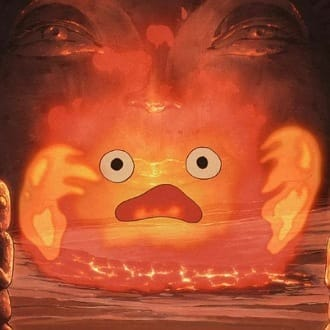

-
Sophie Hatter
Descrição
É a mais velha de três irmãs que trabalham como costureiras na chapelaria de sua família. Sophie é insegura quanto sua aparência e tem dificuldade em encontrar o que quer fazer. Entretanto, uma maldição da Bruxa da Terra Abandonada atransforma em uma mulher de 90 anos, e com isso ela acaba se desenvolvendo como personagem. Ela se torna mais honesta consigo mesma e começa a viver sua vida. O crescimento dela ao longo da história é um dos destaques do filme.
-
Howl
Descrição
Um lindo rapaz com um imenso talento para a feitiçaria. Há rumores de que ele se alimenta doscorações das jovens mulheres e é temido pelo povo porque vive em um horrível castelo em movimento. Como vingança a Bruxa joga uma maldição em Howl: Que quando ele se apaixonar ele vai voltar para ela.
-
Calcifer
Descrição
Calcifer é o demônio do fogo, um pacto com Howl e usa a lareira do castelo como sua casa ele também move o castelo. Mesmo sendo um demônio, ele é um personagem de boa índole que não vai recusar nada que a Sophie peça a ele.
-
Markl
Descrição
Ele é o aprendiz de Howl e a criança que vive no castelo com ele. Não tem origem específica no filme Ela usa seu manto para se transformar em um homem velho de barba longa e ajuda Howl com sua magia de transformação.
-
Bruxa da terra abandonada
Descrição
Ela já foi uma bruxa que serviu à família real, mas foi banida para o deserto depois de ter feito um pacto com um demônio e usado sua magia. Também foi ela quem mudou a aparência de Sophie.
-
Cabeça de nabo

Descrição
O espantalho foi salvo pela Sophie de ficar presa de cabeça para baixo em um terreno baldio. Sua cabeça é feita de um nabo vegetal, daí seu nome. Embora o espantalho não fale, parece mover-se com vontade e parece estar sob algum tipo de feitiço.